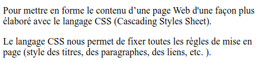

Les langages HTML et CSS sont les principaux langages du Web.
Les deux langages sont complémentaires :
Le HTML décrit la structure (le squelette) d'une page Web.
Le CSS sert à la mise en forme et la mise en page d'une page web. Ce langage
est essentiel pour embellir et donner une apparence attractive à une page Web.
Il est recommandé d'indiquer la langue utilisée dans le document HTML, cette information peut être utile pour
les screen readers et les outils de traduction.
<meta charset="UTF-8">
Indique l'encodage des caractères, l'UTF-8 est un encodage universel qui permet d'afficher toutes
les langues (Latin, Arabe, Chinois, Japonais, etc.).
Autres encodages :
ISO-8859-1 ou Windows-1252 → Encodage pour les langues occidentales
(Europe de l'Ouest).
Shift_JIS ou EUC-JP → Japonais (こんにちは / Konnichiwa).
Indique que la page peut-être rendue sur un mobile sans subir d'agrandissements, ni de
rétricissements.
Balises de base
Titres / Paragraphes / Images
Les titres
Le langage HTML supporte 6 niveaux pour les titres de <h1> à <h6>.
Le titre principal est indiqué par, un titre niveau 1, <h1>.
Un sous-titre, titre niveau 2, est indiqué par <h2>.
<h1>Langages du web</h1>
Exemple avec la balise <h1>...</h1>
Les paragraphes
On utilise la balise <p>...</p> pour délimiter les paragraphes.
<p>Pour mettre en forme le contenu d’une page Web d'une façon plus
élaboré avec le langage CSS (Cascading Styles Sheet).</p>
<p>Le langage CSS nous permet de fixer toutes les règles de mise en
page (style des titres, des paragraphes, des liens, etc. ).</p>

Exemple avec la balise <p>...</p>
Les images
La balise img est utilisée pour insérer une image. Elle possède deux attributs obligatoires :
L'attribut src indique le chemin de l'image.
L'attribut alt indique le texte à afficher en cas de non disponibilité de l'image.
<img src="images/html_css_logo.png" alt="Logo HTML et CSS">
Exemple avec la balise <p>...</p>
Exercice 1
On désire créer la page Web suivante :
TP1 - Les Simpson
Cette page contient trois types d'éléments :
Un titre
Deux paragraphes
Une image
On donne le texte de la page :
Les Simpson
Les Simpson (The Simpsons) sont une série télévisée d'animation américaine pour
adultes créée par Matt Groening et diffusée depuis le 17 décembre 1989 sur le
réseau Fox.
Elle met en scène les Simpson, stéréotype d'une famille de classe moyenne
américaine. Leurs aventures servent une satire du mode de vie américain.
Les membres de la famille, sont Homer, Marge, Bart, Lisa, Maggie, ainsi que
Abe, le père d'Homer.
Une liste non ordonnée indique une liste d'éléments qui ne sont pas ordonnées ou dont
l'ordre n'a pas d'importance. Une liste non ordonnée est appelée aussi liste à puces.
<ul>
<li>Emprunter un tamis pour la farine</li>
<li>Prendre le cousous</li>
</ul>
Exemple avec la balise <ul>...</ul>
Dans ce code <ul>...</ul> indiquent le début et la fin de la liste non ordonnée
(ul=unordered list).
Tandis que <li>...</li> indiquent les éléments de la liste (li = list item).
Liste ordonnée
Une liste ordonnée, appelée également liste numérotée, indique l'ordre dans
lequel les éléments doivent figurer.
<ol>
<li>Ouvrir le réfrégirateur</li>
<li>Chercher une boisson</li>
<li>Prendre la boisson</li>
<li>Fermer le réfrégirateur</li>
<li>Dévisser le bouchon de la boisson</li>
<li>Verser dans un verre</li>
<li>Boire</li>
</ol>
Exemple avec la balise <ol>...</ol>
Dans l'exemple précédent l'ordre des étapes est important, pour celà on utilise une liste ordonnée.
Exercice 2
On désire créer la page web suivante :
Liste des courses
Cette page contient deux types d'éléments :
Des titres : niveau 1 et niveau 2
Une liste numérotée et trois listes à puces
On donne le texte de la page :
Planning des courses
Aller au marché.
Visiter la tante.
Aller à l'épicerie du quartier.
Marché
Poissons
Patates
Oignons
Tomates
Poivre, si prix abordable
Tante
Emprunter un tamis pour la farine
Prendre le cousous
Epicerie du quartier
3Kg de farine
2l huile végétale
3 baguettes
Travail demandé
On demande de :
Créer une page web nommée : liste_courses.html
Ajouter les titres.
Ajouter les listes.
Balises de mise en forme
Gras
Pour mettre un texte en gras on utilise, selon le contexte, soit la balise
<strong>mot en gras</strong> ou bien la balise
<b>mot en gras</b>
Ainsi, le code suivant :
Je suis <strong>Tunisien</strong>, et j'aime la <b>Tunisie</b>
Est interprété comme :
Je suis Tunisien, et j'aime la Tunisie
Italique
On utilise aussi, selon le contexte, l'une des balises <em>mot italique</em> ou
<i>mot italique</i>.
Ainsi, le code suivant :
L'<em>autoconfiance</em> est importante, il faut avoir <i>confiance en soi</i>.
Est interprété comme :
L'autoconfiance est importante, il faut avoir confiance en
soi.
Souligné
Pour souligner un mot ou une phrase on utilise la balise
<u>mot souligné</u> ou
<ins>mot souligné</ins>.
Ainsi, le code suivant :
Une <u>clé primaire</u> doit être toujours <ins>soulignée</ins>.
Est interprété comme :
Une clé primaire doit être toujours soulignée.
Barré
Pour barrer un mot ou une phrase on utilise la balise
<s>mot barré</s> ou
<del>mot barré</del>.
Ainsi, le code suivant :
Je ne veux pas <s>mangé</s> manger un gâteau. Je veux une <del>paume</del> pomme.
Est interprété comme :
Je ne veux pas mangé manger un gâteau. Je veux une paume
pomme.
Exposant et Indice
Dans la formule suivante :
Un+1=0.5 × 2(n+3)
L'indice est ajouté à l'aide de la balise <sub>n+1</sub>.
L'exposant est ajouté à l'aide de la balise <sup>(n+3)</sup>.
Ce qui donne :
U<sub>n+1</sub>=0.5 × 2<sup>(n+3)</sup>
Exercice 3
On désire créer la page web suivante :
Quotes sur la patrie
Cette page contient deux types d'éléments :
Un titre : niveau 1
Des paragraphes avec des mots en gras, en italique et soulignés.
On donne le texte de la page :
La Patrie
“La première des vertus est le dévouement à la patrie.”
“Une patrie est un soporifique de chaque instant.”
“La Charité est une patrie quand elle est vraie.”
“Un homme sans patrie, c'est un rossignol sans chanson.”
Travail demandé
On demande de :
Créer une page web nommée : la_patrie.html
Mettre en forme le titre.
Mettre en forme les mots des paragraphes : gras, italique et souligné.
Application
On veut concevoir un site composé de quatre pages web à propos des ordinateurs, cliquer sur les miniatures
ci-dessous pour les agrandir :
La page index.html, définit ce qu'est un ordinateur.
La page uses.html, définit les usages qu'on peut faire avec un
ordinateur.
La page types.html, présente quelques types d'ordinateurs.
La page parts.html, présente les composants principaux d'un
ordinateur.
index.html
Page 1, What is a computer?
uses.html
Page 2, What a computer is used for?
types.html
Page 3, What are computers types?
parts.html
Page 4, What a computer is composed of?
Travail demandé
Télécharger le texte et les images nécessaires pour réaliser ce TP : Fichiers du TP
Décompresser le fichier compressé dans votre dossier de travail.
Ouvrir ce dossier à l'aide de Visual Studio Code.
Ajouter la structure minimale d'une page Web à chacune des quatre pages.
Ajouter les balises des titres et des sous-titres.
Ajouter les balises pour les paragraphes.
Mettre en forme les mots gras, italiques et soulignés.
Insérer les images miniatures dans les pages qui contiennent des images.
Attention : Les images sont dans le dossier images et se terminent par
le mot thumb